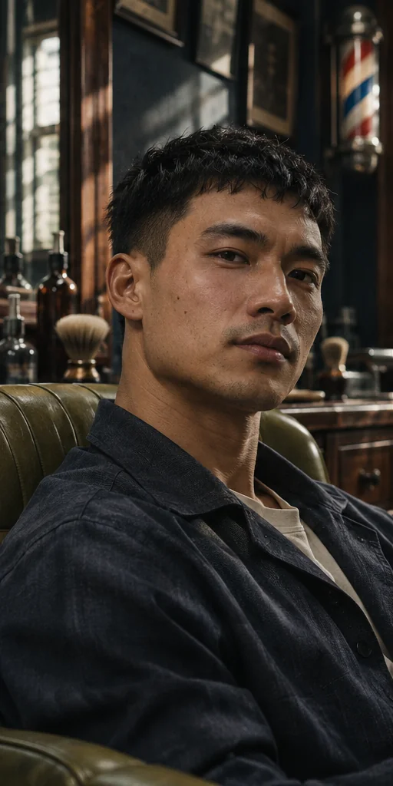
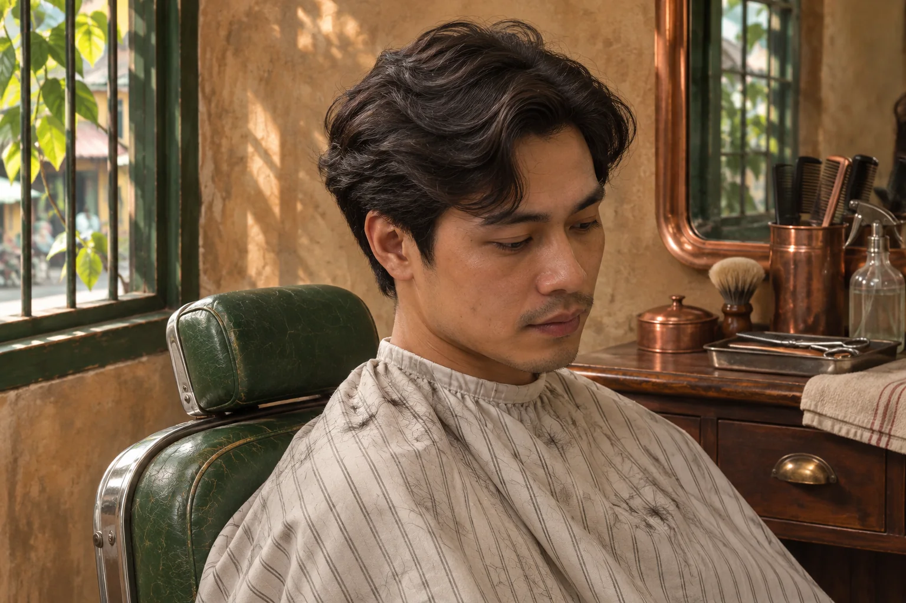

Lookbook Kiểu Tóc & Hướng Dẫn May Đo
Chọn ảnh tham chiếu theo cấu trúc tóc thực tế của bạn. Đừng chỉ nhìn góc chụp chính diện, hãy quan sát cách tóc rơi ở góc nghiêng ba phần tư và độ sát hai bên mai.

Kiểu Chữ Ký #01Textured French Crop
Mái ngắn cắt tỉa bằng kéo so le tạo các tép tóc phân tầng tự nhiên. Phần mai và gáy được ôm sát theo phom đầu, giúp khuôn mặt tròn thon gọn và góc cạnh hơn. Kiểu tóc này hoàn hảo cho cuộc sống năng động vì không bị gãy nếp khi đội nón bảo hiểm.
 Kiểu Chữ Ký #02
Kiểu Chữ Ký #02
Classic Taper Fade Mai & Gáy
Kỹ thuật chuyển độ dài mượt mà từ chân tóc sát da quanh tai lên vùng tóc dày phía trên. Giữ nguyên độ dài đỉnh đầu để bạn có thể chải rẽ ngôi hoặc vuốt quiff lịch lãm cho các sự kiện trang trọng.
Side-Part Thủ Công Bằng Kéo
Cắt kéo hoàn toàn từ chân mai lên đến đỉnh, bảo toàn độ rơi mềm mại và trọng lượng tự nhiên của sợi tóc. Đường rẽ ngôi được thử nghiệm ở 2 vị trí khác nhau để tìm ra hướng rẽ ăn khớp nhất với xoáy đầu.

Kiểu Chữ Ký #04Natural Wavy Flow (Xoăn Bồng Bềnh)
Tôn vinh vẻ đẹp tự nhiên của những mái tóc xoăn hoặc gợn sóng. Người thợ tỉa mỏng từng tép tóc ở góc độ nghiêng để loại bỏ cảm giác nặng trịch, giúp các lọn tóc tự do đan kết bồng bềnh mà không bị xù.
Chưa chắc chắn kiểu tóc nào phù hợp nhất với bạn?
Hãy gửi ảnh tóc hiện tại của bạn qua Zalo để thợ cả Nguyễn Minh Hoàng quan sát xoáy đầu và tư vấn trực tiếp trước khi bạn ghé tiệm.
💬 Gửi Ảnh Tóc Nhận Tư Vấn Qua Zalo (0971 183 939)